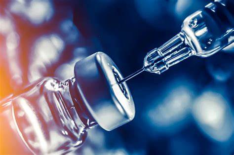

Apoiar a pesquisa e o desenvolvimento de vacinas e medicamentos
A meta 3.b dos Objetivos de Desenvolvimento Sustentável (ODS) estabelecida pela Organização das Nações Unidas (ONU) enfatiza o apoio à pesquisa e desenvolvimento de vacinas e medicamentos para doenças transmissíveis e não transmissíveis, com especial atenção aos desafios enfrentados pelos países em desenvolvimento. Além disso, visa proporcionar o acesso a medicamentos e vacinas essenciais a preços acessíveis, de acordo com a Declaração de Doha sobre o Acordo TRIPS (Aspectos dos Direitos de Propriedade Intelectual Relacionados ao Comércio).
Essa meta reconhece a importância de garantir que avanços médicos e terapêuticos sejam acessíveis globalmente, especialmente para as populações em países em desenvolvimento. Aqui estão alguns pontos-chave relacionados à meta 3.b:
Pesquisa e Desenvolvimento: Apoiar a pesquisa e o desenvolvimento de vacinas e medicamentos é fundamental para enfrentar tanto doenças transmissíveis quanto não transmissíveis. Isso inclui investir em pesquisas inovadoras, colaborações internacionais e a criação de incentivos para a indústria farmacêutica abordar condições de saúde que afetam principalmente os países em desenvolvimento.
Acesso a Preços Acessíveis: Garantir o acesso a medicamentos e vacinas a preços acessíveis é essencial para tornar os tratamentos eficazes amplamente disponíveis. Isso pode envolver a negociação de preços justos, a promoção de genéricos acessíveis e a remoção de barreiras comerciais que possam impactar o custo final dos medicamentos.
Declaração de Doha sobre o Acordo TRIPS: A referência à Declaração de Doha destaca a importância de utilizar as flexibilidades previstas no Acordo TRIPS (Aspectos dos Direitos de Propriedade Intelectual Relacionados ao Comércio). Isso permite que os países em desenvolvimento possam adotar medidas para proteger a saúde pública, incluindo o acesso a medicamentos a preços acessíveis, sem violar as leis de propriedade intelectual.
Cooperação Internacional: A colaboração entre países, organizações internacionais, setor privado e organizações não governamentais é crucial para enfrentar desafios globais de saúde. A troca de conhecimentos, tecnologias e recursos fortalece os esforços para pesquisa, desenvolvimento e distribuição equitativa de medicamentos e vacinas.
Enfrentamento de Prioridades Locais: Reconhecer as prioridades específicas de saúde em diferentes regiões e países é fundamental. Isso envolve adaptar estratégias de pesquisa e desenvolvimento para abordar as necessidades locais e garantir que os tratamentos sejam relevantes e eficazes em contextos específicos.
Ao atingir a meta 3.b, a comunidade internacional trabalha em direção a um cenário em que a inovação médica é compartilhada de maneira justa e equitativa, garantindo que a saúde seja um direito acessível a todos, independentemente de sua localização geográfica ou condição econômica.